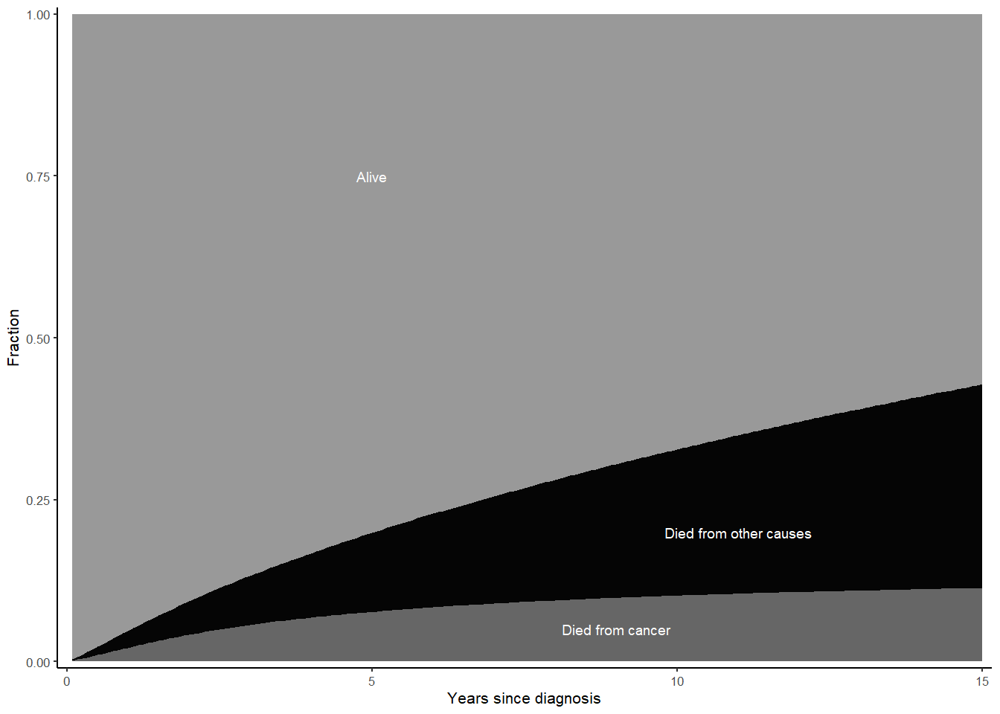
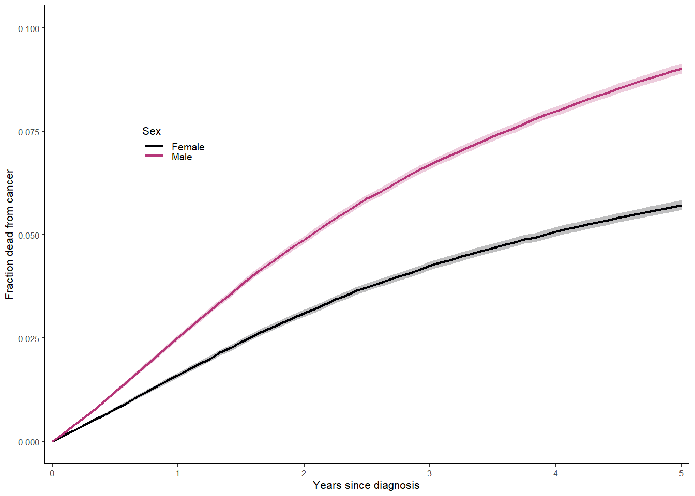
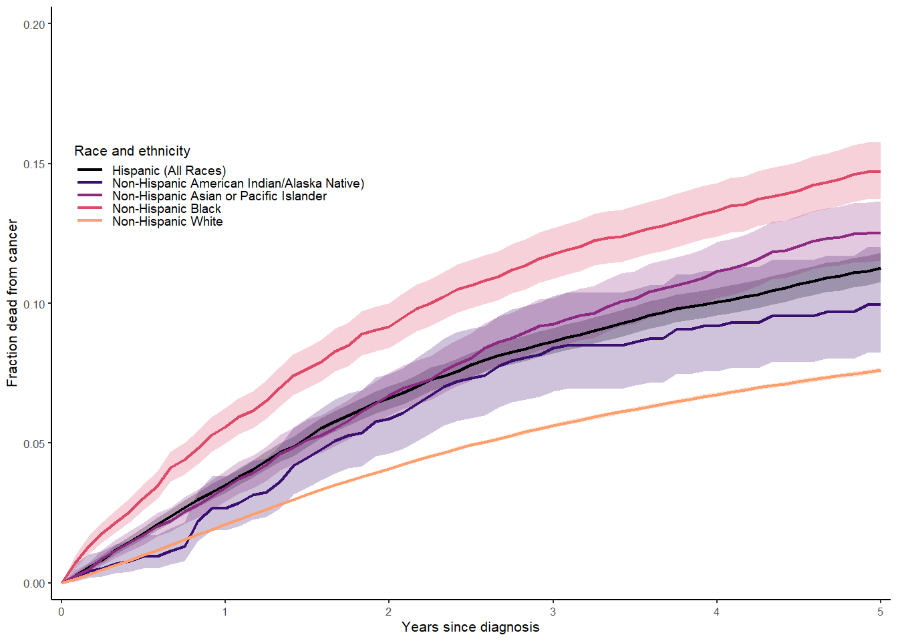
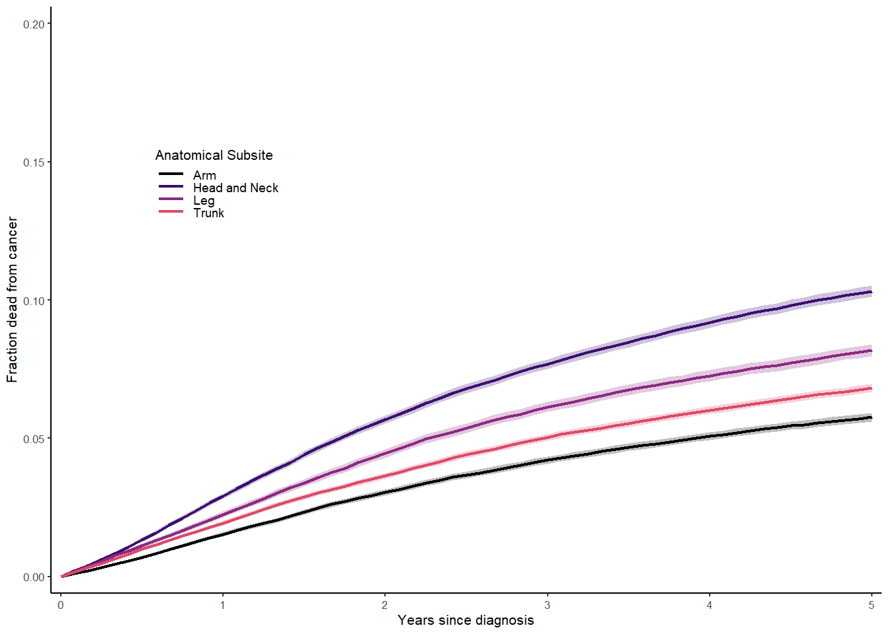
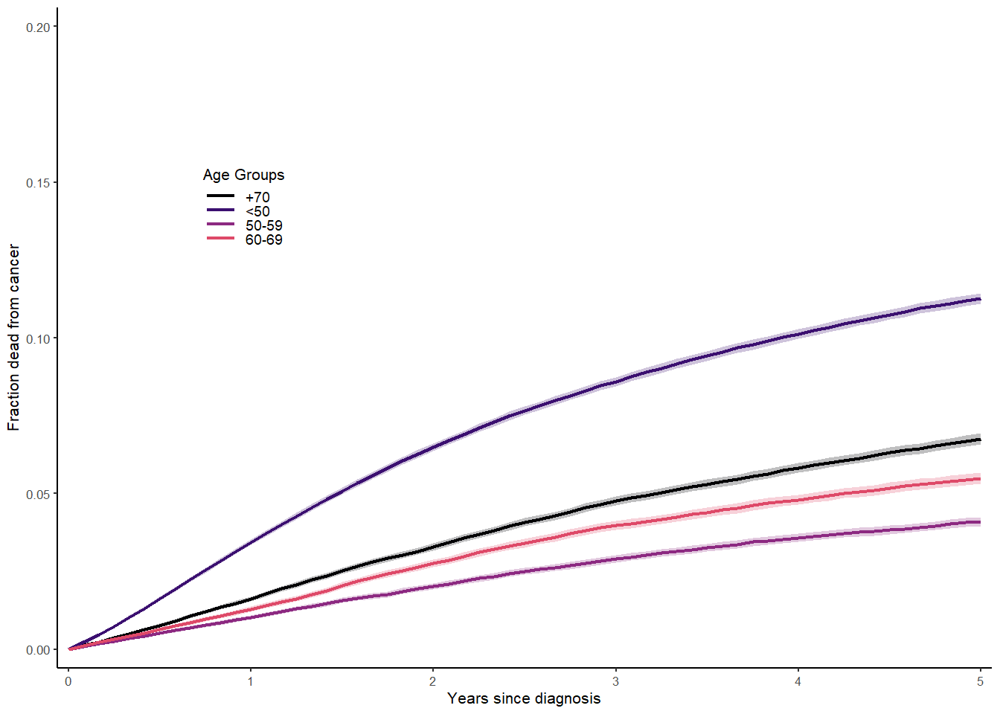

Visualize cumulative incidence of cancer deaths and other deaths in cancer patients.
Use Cox proportional hazards models to compare mortality rates among different demographic groups.
Calculate, visualize and interpret time-varying hazard ratios.
1. Import and manage data
data <-read.csv("melanoma_survival.csv", header=TRUE)# Agetable(data$Age.recode.with..1.year.olds.and.90.)
15-19 years 20-24 years 25-29 years 30-34 years 35-39 years 40-44 years
1412 3908 7302 11183 14862 19325
45-49 years 50-54 years 55-59 years 60-64 years 65-69 years 70-74 years
26097 33805 41309 47299 50594 47770
75-79 years 80-84 years 85-89 years 90+ years
42301 34539 22827 12385
data$age <- dplyr::case_when( data[[1]] %in%c("15-19 years","20-24 years","25-29 years","30-34 years","35-39 years","40-44 years","45-49 years") ~"<50", data[[1]] %in%c("50-54 years","55-59 years") ~"50-59", data[[1]] %in%c("60-64 years","65-69 years") ~"60-69", data[[1]] %in%c("70-74 years","75-79 years","80-84 years","85-89 years","90+ years") ~"70+",TRUE~NA_character_)data$age <-factor(data$age, levels =c("70+","<50","50-59","60-69"))# Racecolnames(data)[2] <-"race"data$race <-factor(data$race)data$race <-relevel(data$race, ref ="Non-Hispanic White")# Sexcolnames(data)[3] <-"sex"data$sex <-factor(data$sex, levels =c("Female","Male"))# Create Head_and_Neck classification and update subsite factor levels# Rename column 5 to "subsite"colnames(data)[5] ="subsite"# Recode subsite into broader categoriesdata <- data %>%mutate(subsite =case_when( subsite %in%c("C44.1-Eyelid", "C44.2-External ear","C44.3-Skin other/unspec parts of face","C44.4-Skin of scalp and neck") ~"Head and Neck", subsite %in%c("C44.5-Trunk") ~"Trunk", subsite %in%c("C44.6-Upper limb") ~"Arm", subsite %in%c("C44.7-Lower limb") ~"Leg",TRUE~ subsite ),subsite =factor(subsite, levels =c("Head and Neck", "Trunk", "Arm", "Leg")))# Year of diagnosisdata$yod <-ifelse(data[[4]] <2010, "2004-2009", "2010-2022")data$yod <-factor(data$yod, levels =c("2004-2009","2010-2022"))# Stagecolnames(data)[6]="stage"table(data$stage)
Distant site(s)/node(s) involved
8504
In situ
47
Localized only
345988
Regional by both direct extension and lymph node involvement
4340
Regional by direct extension only
11179
Regional lymph nodes involved only
19852
Unknown/unstaged/unspecified/DCO
27008
data$stage <- dplyr::case_when( data$stage %in%c("Blank(s)", "In situ", "Unknown/unstaged/unspecified/DCO") ~"Unstaged", data$stage %in%c("Regional by both direct extension and lymph node involvement","Regional by direct extension only","Regional lymph nodes involved only") ~"Regional", data$stage =="Distant site(s)/node(s) involved"~"Distant", data$stage =="Localized only"~"Localized",TRUE~ data$stage)data$stage <-factor(data$stage, levels =c("Localized","Regional","Distant","Unstaged"))# Survival timecolnames(data)[9] <-"time"data$time <-as.numeric(data$time)data$time <- data$time /12# convert months to years# Survival eventdata$event <- dplyr::case_when( data[[7]] =="Dead (attributable to this cancer dx)"~"Cancer death", data[[8]] =="Dead (attributable to causes other than this cancer dx)"~"Other death", data[[7]] =="Alive or dead of other cause"& data[[8]] =="Alive or dead due to cancer"~"Alive",TRUE~NA_character_)
2. Plot cumulative incidence using the survival package
# Create a multistate (competing risks) survival object with no covariates (~1)sf_HN_MS <-survfit(Surv(time=data$time,event=data$event,type="mstate")~1)DATA <-matrix(NA,nrow=3*length(sf_HN_MS$time),ncol=3)# Time for each of "Cancer death", "other death", and "alive"DATA[,1] <-rep(sf_HN_MS$time,3)# Probabilities are cumulative. These are where "Cancer death", "other death", and "alive" each startDATA[,2] <-c(rep(0,length(sf_HN_MS$time)),sf_HN_MS$pstate[,2],sf_HN_MS$pstate[,2]+sf_HN_MS$pstate[,3])# Probabilities are cumulative. These are where "Cancer death", "other death", and "alive" each endDATA[,3] <-c(sf_HN_MS$pstate[,2],sf_HN_MS$pstate[,2]+sf_HN_MS$pstate[,3],rep(1,length(sf_HN_MS$time)))DATA <-as.data.frame(DATA)colnames(DATA) <-c("x","ymin","ymax")DATA$state <-c(rep("Cancer Death",length(sf_HN_MS$time)),rep("Other death",length(sf_HN_MS$time)),rep("Alive",length(sf_HN_MS$time)))DATA$state <-factor(DATA$state,levels=c("Cancer Death","Other death","Alive"))p0 <-ggplot(data = DATA, aes(x = x, y = ymin, ymin = ymin, ymax = ymax, fill = state)) +scale_fill_manual(values=c("gray40", "gray2", "grey60"), guide_legend(title ="Age at diagnosis")) +geom_ribbon(aes(fill = state,linetype =NA), alpha =1, show.legend =FALSE) +theme_bw(base_size =8) +labs(x ='Years since diagnosis', y ='Fraction') +theme(axis.title.y =element_text(vjust=1.5))+theme(legend.position.inside =c(0.3,0.8),legend.key =element_blank(),legend.background =element_blank(), legend.text =element_text(size=7),legend.key.height =unit(0.05,"inch")) +theme(panel.border =element_blank(),panel.background =element_blank(),panel.grid.major =element_blank(),panel.grid.minor =element_blank(),axis.line.x =element_line(color ="black", linewidth =0.4),axis.line.y =element_line(color ="black", linewidth =0.4))+annotate("text", x =c(5, 9, 11), y =c(0.75, 0.05, 0.2), label =c("Alive", "Died from cancer","Died from other causes"),color ="White", size =2.5) +scale_x_continuous(limits =c(0, 15), expand = (c(0.01, 0.01)), breaks =c(0, 5, 10, 15, 20)) +scale_y_continuous(limits =c(0, 1), expand =c(0.005,0.005))p0
Warning: Removed 141 rows containing missing values or values outside the scale range
(`geom_ribbon()`).

3. Plotting cumulative incidence by covariate
Here, we create a survift object with cumulative incidence stratified by the levels of our variables of interest. In order to extract information for plotting from the survfit objects, we need to know the order of the levels and how many rows are associated with each level.
Let’s start by looking at sex and race & ethnicity.
data$time <-as.numeric(as.character(data$time))# Cumulative incidence of cancer death by sexsf_sex <-survfit(Surv(time=data$time,event=data$event,type="mstate")~data$sex)# Cumulative incidence of cancer death by race and ethnicitysf_race_eth <-survfit(Surv(time=data$time,event=data$event,type="mstate")~data$race)# Cumulative incidence of cancer death by subsitesf_subsite <-survfit(Surv(time=data$time,event=data$event,type="mstate")~data$subsite)# Cumulative incidence of cancer death by agesf_age <-survfit(Surv(time=data$time,event=data$event,type="mstate")~data$age)# Check the strata of each modelsf_sex$strata
data$sex=Female data$sex=Male
227 227
sf_race_eth$strata
data$race=Non-Hispanic White
227
data$race=Hispanic (All Races)
227
data$race=Non-Hispanic American Indian/Alaska Native
213
data$race=Non-Hispanic Asian or Pacific Islander
227
data$race=Non-Hispanic Black
227
data$race=Non-Hispanic Unknown Race
227
sf_subsite$strata
data$subsite=Head and Neck data$subsite=Trunk
227 227
data$subsite=Arm data$subsite=Leg
227 227
In the example data, most groups have information across all possible survival months, but that isn’t true for small subgroups (in the example data, Non-Hispanic American Indian/Alaskan Native).
# Plot cumulative incidence of cancer death by sex# For ease of plotting for other covariates, use generic plot code after settingdf_sex <- sf_sexmycolors <- magma# Create a data matrix with the correct number of rows:# A 0 for each group plus the sum of the number of rows for each subgroupDATA_ci_sex <-matrix(NA,nrow=(length(df_sex$strata)+sum(df_sex$strata)),ncol=4)# xDATA_ci_sex[,1] <-c(0,df_sex$time[1:df_sex$strata[1]],0, df_sex$time[(1+ df_sex$strata[1]):(sum(df_sex$strata[1:2]))])# yDATA_ci_sex[,2] <-c(0,df_sex$pstate[1:df_sex$strata[1],2],0, df_sex$pstate[(1+ df_sex$strata[1]):(sum(df_sex$strata[1:2])),2])# 95% CI (lower bound)DATA_ci_sex[,3] <-c(0,df_sex$lower[1:df_sex$strata[1],2],0, df_sex$lower[(1+ df_sex$strata[1]):(sum(df_sex$strata[1:2])),2])# 95% CI (upper bound)DATA_ci_sex[,4] <-c(0,df_sex$upper[1:df_sex$strata[1],2],0, df_sex$upper[(1+ df_sex$strata[1]):(sum(df_sex$strata[1:2])),2])DATA_ci_sex <-as.data.frame(DATA_ci_sex)colnames(DATA_ci_sex) <-c("x","y","ymin","ymax")breaks <-which(c(DATA_ci_sex$x,0)==0)[-1]DATA_ci_sex$sex <-c(rep("Female",df_sex$strata[1] +1),rep("Male",df_sex$strata[2] +1))DATA_ci_sex$sex <-factor(DATA_ci_sex$sex,levels=levels(data$sex))# In this plot, we have two groups, so it gets busy to also show other# cause deaths. We drop them from this plot.plot_sex <-ggplot(data = DATA_ci_sex,aes(x = x, y = y, ymin = ymin, ymax = ymax, color = sex)) +scale_color_manual(values =mycolors(3)[-3],name ="Sex") +geom_ribbon(aes(fill = sex, linetype =NA), alpha =0.25, show.legend=FALSE) +geom_line(linewidth =0.75) +scale_fill_manual(guide ="none", values =mycolors(3)[-3]) +theme_bw(base_size =8) +labs(x ='Years since diagnosis', y ='Fraction dead from cancer') +theme(axis.title.y =element_text(vjust=1.5)) +theme(legend.position ="inside",legend.position.inside =c(0.2,0.7), legend.key =element_blank(),legend.background =element_blank(), legend.text =element_text(size =7),legend.key.height =unit(0.05,"inch")) +theme(panel.border =element_blank(),panel.background =element_blank(),panel.grid.major =element_blank(),panel.grid.minor =element_blank(),axis.line.x =element_line(color ="black", linewidth =0.4),axis.line.y =element_line(color ="black", linewidth =0.4)) +scale_x_continuous(limits =c(0, 5), expand = (c(0.01, 0.01))) +scale_y_continuous(limits=c(0, 0.1), expand =c(0.005, 0.005))plot_sex
Warning: Removed 334 rows containing missing values or values outside the scale range
(`geom_ribbon()`).
Warning: Removed 334 rows containing missing values or values outside the scale range
(`geom_line()`).

# Plot cumulative incidence of cancer death by race and ethnicity# For ease of plotting for other covariates, use generic plot code after settingdf_re <- sf_race_eth# Create a data matrix with the correct number of rows:# A 0 for each group plus the sum of the number of rows for each subgroup.# Drop "unknown" race.DATA_ci_re=matrix(NA, nrow=(5+sum(df_re$strata[1:5])), ncol=4)# xDATA_ci_re[,1]=c(0, df_re$time[1:df_re$strata[1]],0, df_re$time[(1+ df_re$strata[1]):(sum(df_re$strata[1:2]))],0, df_re$time[(1+sum(df_re$strata[1:2])):(sum(df_re$strata[1:3]))],0, df_re$time[(1+sum(df_re$strata[1:3])):(sum(df_re$strata[1:4]))],0, df_re$time[(1+sum(df_re$strata[1:4])):(sum(df_re$strata[1:5]))])# yDATA_ci_re[,2]=c(0, df_re$pstate[1:df_re$strata[1],2],0, df_re$pstate[(1+ df_re$strata[1]):(sum(df_re$strata[1:2])),2],0, df_re$pstate[(1+sum(df_re$strata[1:2])):(sum(df_re$strata[1:3])),2],0, df_re$pstate[(1+sum(df_re$strata[1:3])):(sum(df_re$strata[1:4])),2],0, df_re$pstate[(1+sum(df_re$strata[1:4])):(sum(df_re$strata[1:5])),2])# 95% CI (lower bound)DATA_ci_re[,3]=c(0,df_re$lower[1:df_re$strata[1],2],0, df_re$lower[(1+ df_re$strata[1]):(sum(df_re$strata[1:2])),2],0, df_re$lower[(1+sum(df_re$strata[1:2])):(sum(df_re$strata[1:3])),2],0, df_re$lower[(1+sum(df_re$strata[1:3])):(sum(df_re$strata[1:4])),2],0, df_re$lower[(1+sum(df_re$strata[1:4])):(sum(df_re$strata[1:5])),2])# 95% CI (upper bound)DATA_ci_re[,4]=c(0,df_re$upper[1:df_re$strata[1],2],0, df_re$upper[(1+ df_re$strata[1]):(sum(df_re$strata[1:2])),2],0, df_re$upper[(1+sum(df_re$strata[1:2])):(sum(df_re$strata[1:3])),2],0, df_re$upper[(1+sum(df_re$strata[1:3])):(sum(df_re$strata[1:4])),2],0, df_re$upper[(1+sum(df_re$strata[1:4])):(sum(df_re$strata[1:5])),2])DATA_ci_re <-as.data.frame(DATA_ci_re)colnames(DATA_ci_re) <-c("x","y","ymin","ymax")breaks <-which(c(DATA_ci_re$x,0) ==0)[-1]DATA_ci_re$race_eth <-c(rep("Non-Hispanic White", 1+ df_re$strata[1]),rep("Hispanic (All Races)", 1+ df_re$strata[2]),rep("Non-Hispanic American Indian/Alaska Native)", 1+ df_re$strata[3]),rep("Non-Hispanic Asian or Pacific Islander", 1+ df_re$strata[4]),rep("Non-Hispanic Black", 1+ df_re$strata[5]))DATA_ci_re$race_eth=factor(DATA_ci_re$race_eth)# In this plot, we have two groups, so it gets busy to also show other# cause deaths. We drop them from this plot.plot_race_eth <-ggplot(data=DATA_ci_re,aes(x = x, y = y, ymin = ymin, ymax = ymax, color = race_eth)) +scale_color_manual(values =mycolors(6)[-6], name ="Race and ethnicity") +geom_ribbon(aes(fill = race_eth,linetype =NA), alpha =0.25, show.legend =FALSE) +geom_line(linewidth =0.75) +scale_fill_manual(guide="none",values=mycolors(6)[-6])+theme_bw(base_size =8) +labs(x ="Years since diagnosis", y ="Fraction dead from cancer") +theme(axis.title.y =element_text(vjust =1.5)) +theme(legend.position ="inside",legend.position.inside =c(0.2,0.7),legend.key =element_blank(),legend.background =element_blank(),legend.text =element_text(size=7),legend.key.height =unit(0.05,"inch")) +theme(panel.border =element_blank(),panel.background =element_blank(),panel.grid.major =element_blank(),panel.grid.minor =element_blank(),axis.line.x =element_line(color ="black",linewidth=0.4),axis.line.y =element_line(color ="black",linewidth=0.4)) +scale_x_continuous(limits =c(0,5), expand = (c(0.01,0.01))) +scale_y_continuous(limits =c(0,.2), expand =c(0.005,0.005))plot_race_eth
Warning: Removed 821 rows containing missing values or values outside the scale range
(`geom_ribbon()`).
Warning: Removed 821 rows containing missing values or values outside the scale range
(`geom_line()`).

# Plot cumulative incidence of cancer death by subsite# For ease of plotting for other covariates, use generic plot code after settingdf_subsite <- sf_subsite# Create a data matrix with the correct number of rows:# A 0 for each group plus the sum of the number of rows for each subgroup.# Drop "unknown" race.DATA_ci_subsite=matrix(NA, nrow=(4+sum(df_subsite$strata[1:4])), ncol =4)# xDATA_ci_subsite[,1] <-c(0, df_subsite$time[1:df_subsite$strata[1]],0, df_subsite$time[(1+ df_subsite$strata[1]):(sum(df_subsite$strata[1:2]))],0, df_subsite$time[(1+sum(df_subsite$strata[1:2])):(sum(df_subsite$strata[1:3]))],0, df_subsite$time[(1+sum(df_subsite$strata[1:3])):(sum(df_subsite$strata[1:4]))])# yDATA_ci_subsite[,2] <-c(0,df_subsite$pstate[1:df_subsite$strata[1],2],0, df_subsite$pstate[(1+ df_subsite$strata[1]):(sum(df_subsite$strata[1:2])),2],0, df_subsite$pstate[(1+sum(df_subsite$strata[1:2])):(sum(df_subsite$strata[1:3])),2],0, df_subsite$pstate[(1+sum(df_subsite$strata[1:3])):(sum(df_subsite$strata[1:4])),2])# 95% CI (lower bound)DATA_ci_subsite[,3] <-c(0,df_subsite$lower[1:df_subsite$strata[1],2],0, df_subsite$lower[(1+ df_subsite$strata[1]):(sum(df_subsite$strata[1:2])),2],0, df_subsite$lower[(1+sum(df_subsite$strata[1:2])):(sum(df_subsite$strata[1:3])),2],0, df_subsite$lower[(1+sum(df_subsite$strata[1:3])):(sum(df_subsite$strata[1:4])),2])# 95% CI (upper bound)DATA_ci_subsite[,4] <-c(0,df_subsite$upper[1:df_subsite$strata[1],2],0, df_subsite$upper[(1+ df_subsite$strata[1]):(sum(df_subsite$strata[1:2])),2],0, df_subsite$upper[(1+sum(df_subsite$strata[1:2])):(sum(df_subsite$strata[1:3])),2],0, df_subsite$upper[(1+sum(df_subsite$strata[1:3])):(sum(df_subsite$strata[1:4])),2])DATA_ci_subsite <-as.data.frame(DATA_ci_subsite)colnames(DATA_ci_subsite) <-c("x","y","ymin","ymax")breaks <-which(c(DATA_ci_subsite$x,0) ==0)[-1]DATA_ci_subsite$subsite <-c(rep("Head and Neck", 1+ df_subsite$strata[1]),rep("Trunk", 1+ df_subsite$strata[2]),rep("Arm", 1+ df_subsite$strata[3]),rep("Leg", 1+ df_subsite$strata[4]))DATA_ci_subsite$subsite =factor(DATA_ci_subsite$subsite)# In this plot, we have two groups, so it gets busy to also show other# cause deaths. We drop them from this plot.plot_subsite <-ggplot(data = DATA_ci_subsite, aes(x = x, y = y, ymin = ymin, ymax = ymax, color = subsite)) +scale_color_manual(values =mycolors(6)[-6],name ="Anatomical Subsite") +geom_ribbon(aes(fill = subsite, linetype =NA), alpha =0.25, show.legend =FALSE) +geom_line(linewidth =0.75) +scale_fill_manual(guide="none",values=mycolors(6)[-6]) +theme_bw(base_size =8) +labs(x='Years since diagnosis', y='Fraction dead from cancer') +theme(axis.title.y=element_text(vjust=1.5)) +theme(legend.position ="inside",legend.position.inside =c(0.2,0.7), legend.key =element_blank(),legend.background =element_blank(), legend.text =element_text(size =7),legend.key.height =unit(0.05,"inch")) +theme(panel.border =element_blank(),panel.background =element_blank(),panel.grid.major =element_blank(),panel.grid.minor =element_blank(),axis.line.x =element_line(color ="black", linewidth =0.4),axis.line.y =element_line(color ="black", linewidth =0.4))+scale_x_continuous(limits =c(0,5), expand=(c(0.01, 0.01))) +scale_y_continuous(limits =c(0,0.2), expand=c(0.005, 0.005))plot_subsite
Warning: Removed 668 rows containing missing values or values outside the scale range
(`geom_ribbon()`).
Warning: Removed 668 rows containing missing values or values outside the scale range
(`geom_line()`).

# Plot cumulative incidence of cancer death by race and ethnicity# For ease of plotting for other covariates, use generic plot code after settingdf_age <- sf_age# Create a data matrix with the correct number of rows:# A 0 for each group plus the sum of the number of rows for each subgroup.# Drop "unknown" race.DATA_ci_age <-matrix(NA,nrow=(4+sum(df_age$strata[1:4])), ncol=4)# xDATA_ci_age[,1] <-c(0, df_age$time[1:df_age$strata[1]],0, df_age$time[(1+ df_age$strata[1]):(sum(df_age$strata[1:2]))],0, df_age$time[(1+sum(df_age$strata[1:2])):(sum(df_age$strata[1:3]))],0, df_age$time[(1+sum(df_age$strata[1:3])):(sum(df_age$strata[1:4]))])# yDATA_ci_age[,2] <-c(0,df_age$pstate[1:df_age$strata[1],2],0, df_age$pstate[(1+ df_age$strata[1]):(sum(df_age$strata[1:2])), 2],0, df_age$pstate[(1+sum(df_age$strata[1:2])):(sum(df_age$strata[1:3])), 2],0, df_age$pstate[(1+sum(df_age$strata[1:3])):(sum(df_age$strata[1:4])), 2])# 95% CI (lower bound)DATA_ci_age[,3] <-c(0,df_age$lower[1:df_age$strata[1],2],0, df_age$lower[(1+ df_age$strata[1]):(sum(df_age$strata[1:2])), 2],0, df_age$lower[(1+sum(df_age$strata[1:2])):(sum(df_age$strata[1:3])), 2],0, df_age$lower[(1+sum(df_age$strata[1:3])):(sum(df_age$strata[1:4])), 2])# 95% CI (upper bound)DATA_ci_age[,4] <-c(0,df_age$upper[1:df_age$strata[1],2],0, df_age$upper[(1+ df_age$strata[1]):(sum(df_age$strata[1:2])), 2],0, df_age$upper[(1+sum(df_age$strata[1:2])):(sum(df_age$strata[1:3])), 2],0, df_age$upper[(1+sum(df_age$strata[1:3])):(sum(df_age$strata[1:4])), 2])DATA_ci_age <-as.data.frame(DATA_ci_age)colnames(DATA_ci_age) <-c("x","y","ymin","ymax")breaks <-which(c(DATA_ci_age$x,0) ==0)[-1]DATA_ci_age$age <-c(rep("<50", 1+df_age$strata[1]),rep("50-59", 1+ df_age$strata[2]),rep("60-69", 1+ df_age$strata[3]),rep("+70", 1+ df_age$strata[4]))DATA_ci_age$age <-factor(DATA_ci_age$age)# In this plot, we have two groups, so it gets busy to also show other# cause deaths. We drop them from this plot.plot_age <-ggplot(data = DATA_ci_age, aes(x = x, y = y, ymin = ymin, ymax = ymax, color = age)) +scale_color_manual(values =mycolors(6)[-6], name ="Age Groups") +geom_ribbon(aes(fill = age, linetype =NA), alpha =0.25, show.legend =FALSE) +geom_line(linewidth =0.75) +scale_fill_manual(guide="none", values =mycolors(6)[-6]) +theme_bw(base_size =8) +labs(x ='Years since diagnosis', y ='Fraction dead from cancer') +theme(axis.title.y =element_text(vjust =1.5)) +theme(legend.position ="inside",legend.position.inside =c(0.2,0.7),legend.key =element_blank(),legend.background =element_blank(), legend.text =element_text(size=7),legend.key.height=unit(0.05,"inch")) +theme(panel.border =element_blank(),panel.background =element_blank(),panel.grid.major =element_blank(),panel.grid.minor =element_blank(),axis.line.x =element_line(color ="black", linewidth =0.4),axis.line.y =element_line(color ="black", linewidth =0.4))+scale_x_continuous(limits =c(0, 5), expand = (c(0.01, 0.01)))+scale_y_continuous(limits =c(0, 0.2), expand =c(0.005, 0.005))plot_age
Warning: Removed 668 rows containing missing values or values outside the scale range
(`geom_ribbon()`).
Warning: Removed 668 rows containing missing values or values outside the scale range
(`geom_line()`).

4/ Cox proportional hazards models
We saw in the above plots that covariates impact the survival. If we assume that the rates are proportional over time, what are the hazard ratios?
We will focus on survival in the first 5 years.
# Define a censoring variable at 5 years survivaldata$censored.time <-ifelse(data$time >5, 5, data$time)data$censored.event <-ifelse(data$time >5, "Alive", as.character(data$event))# Because we are considering the instantaneous rate of cancer death,# we treat other deaths as being censoreddata$cancer.death <- (data$censored.event =="Cancer death")# Generate survival object cancer.death.surv.5yr <-Surv(data$censored.time, data$cancer.death)# By sex malefit.coxph.sex <-coxph(cancer.death.surv.5yr ~ sex,data = data)summary(fit.coxph.sex)
Call:
coxph(formula = cancer.death.surv.5yr ~ sex, data = data)
n= 416918, number of events= 27689
coef exp(coef) se(coef) z Pr(>|z|)
sexMale 0.49774 1.64500 0.01306 38.12 <2e-16 ***
---
Signif. codes: 0 '***' 0.001 '**' 0.01 '*' 0.05 '.' 0.1 ' ' 1
exp(coef) exp(-coef) lower .95 upper .95
sexMale 1.645 0.6079 1.603 1.688
Concordance= 0.557 (se = 0.001 )
Likelihood ratio test= 1538 on 1 df, p=<2e-16
Wald test = 1453 on 1 df, p=<2e-16
Score (logrank) test = 1484 on 1 df, p=<2e-16
# The hazard ratio is exp(ceof). Is it significant?# Stage is the most important predictor of stage, so other variables are # vulnerable to confounding. We should adjust for stage.fit.coxph.sex_stage <-coxph(cancer.death.surv.5yr ~ sex + stage,data = data)summary(fit.coxph.sex_stage)
# Did the hazard ratio for sex increase or decrease?# What if we included all the covariates in a multivariable model?
data_sex_female = datadata_sex_female$sex =relevel(data$sex, ref ="Male")# By sex femalefit.coxph.sex_female <-coxph(cancer.death.surv.5yr ~ sex,data = data_sex_female)summary(fit.coxph.sex_female)
Call:
coxph(formula = cancer.death.surv.5yr ~ sex, data = data_sex_female)
n= 416918, number of events= 27689
coef exp(coef) se(coef) z Pr(>|z|)
sexFemale -0.49774 0.60790 0.01306 -38.12 <2e-16 ***
---
Signif. codes: 0 '***' 0.001 '**' 0.01 '*' 0.05 '.' 0.1 ' ' 1
exp(coef) exp(-coef) lower .95 upper .95
sexFemale 0.6079 1.645 0.5925 0.6237
Concordance= 0.557 (se = 0.001 )
Likelihood ratio test= 1538 on 1 df, p=<2e-16
Wald test = 1453 on 1 df, p=<2e-16
Score (logrank) test = 1484 on 1 df, p=<2e-16
# Stage is the most important predictor of stage, so other variable are # vulnerable to confounding. We should adjust for stage.fit.coxph.sex_female_stage <-coxph(cancer.death.surv.5yr ~ sex + stage,data = data_sex_female)summary(fit.coxph.sex_female_stage)
# Define a censoring variable at 5 years survival# By race (black)fit.coxph.race_black <-coxph(cancer.death.surv.5yr ~ race,data = data)summary(fit.coxph.race_black)
Call:
coxph(formula = cancer.death.surv.5yr ~ race, data = data)
n= 416918, number of events= 27689
coef exp(coef) se(coef)
raceHispanic (All Races) 0.41304 1.51141 0.02591
raceNon-Hispanic American Indian/Alaska Native 0.28546 1.33037 0.10020
raceNon-Hispanic Asian or Pacific Islander 0.52299 1.68706 0.04608
raceNon-Hispanic Black 0.72638 2.06758 0.03833
raceNon-Hispanic Unknown Race -3.08919 0.04554 0.14921
z Pr(>|z|)
raceHispanic (All Races) 15.942 < 2e-16 ***
raceNon-Hispanic American Indian/Alaska Native 2.849 0.00439 **
raceNon-Hispanic Asian or Pacific Islander 11.349 < 2e-16 ***
raceNon-Hispanic Black 18.952 < 2e-16 ***
raceNon-Hispanic Unknown Race -20.704 < 2e-16 ***
---
Signif. codes: 0 '***' 0.001 '**' 0.01 '*' 0.05 '.' 0.1 ' ' 1
exp(coef) exp(-coef) lower .95
raceHispanic (All Races) 1.51141 0.6616 1.43657
raceNon-Hispanic American Indian/Alaska Native 1.33037 0.7517 1.09315
raceNon-Hispanic Asian or Pacific Islander 1.68706 0.5927 1.54136
raceNon-Hispanic Black 2.06758 0.4837 1.91795
raceNon-Hispanic Unknown Race 0.04554 21.9592 0.03399
upper .95
raceHispanic (All Races) 1.59014
raceNon-Hispanic American Indian/Alaska Native 1.61906
raceNon-Hispanic Asian or Pacific Islander 1.84653
raceNon-Hispanic Black 2.22888
raceNon-Hispanic Unknown Race 0.06101
Concordance= 0.536 (se = 0.001 )
Likelihood ratio test= 2256 on 5 df, p=<2e-16
Wald test = 1147 on 5 df, p=<2e-16
Score (logrank) test = 1691 on 5 df, p=<2e-16
# The hazard ratio is exp(ceof). Is is significant?# Stage is the most important predictor of stage, so other variable are # vulnerable to confounding. We should adjust for stage.fit.coxph.race_black_stage <-coxph(cancer.death.surv.5yr ~ race + stage,data = data)summary(fit.coxph.race_black_stage)
Call:
coxph(formula = cancer.death.surv.5yr ~ race + stage, data = data)
n= 416918, number of events= 27689
coef exp(coef) se(coef)
raceHispanic (All Races) 0.11721 1.12435 0.02599
raceNon-Hispanic American Indian/Alaska Native 0.16138 1.17513 0.10021
raceNon-Hispanic Asian or Pacific Islander 0.12071 1.12830 0.04618
raceNon-Hispanic Black 0.29428 1.34216 0.03847
raceNon-Hispanic Unknown Race -2.78183 0.06193 0.14936
stageRegional 2.06089 7.85294 0.01396
stageDistant 3.18799 24.23956 0.01773
stageUnstaged 0.77506 2.17073 0.02496
z Pr(>|z|)
raceHispanic (All Races) 4.509 6.51e-06 ***
raceNon-Hispanic American Indian/Alaska Native 1.610 0.10730
raceNon-Hispanic Asian or Pacific Islander 2.614 0.00896 **
raceNon-Hispanic Black 7.649 2.02e-14 ***
raceNon-Hispanic Unknown Race -18.625 < 2e-16 ***
stageRegional 147.594 < 2e-16 ***
stageDistant 179.808 < 2e-16 ***
stageUnstaged 31.054 < 2e-16 ***
---
Signif. codes: 0 '***' 0.001 '**' 0.01 '*' 0.05 '.' 0.1 ' ' 1
exp(coef) exp(-coef) lower .95
raceHispanic (All Races) 1.12435 0.88940 1.06851
raceNon-Hispanic American Indian/Alaska Native 1.17513 0.85097 0.96558
raceNon-Hispanic Asian or Pacific Islander 1.12830 0.88629 1.03065
raceNon-Hispanic Black 1.34216 0.74507 1.24468
raceNon-Hispanic Unknown Race 0.06193 16.14853 0.04621
stageRegional 7.85294 0.12734 7.64094
stageDistant 24.23956 0.04125 23.41171
stageUnstaged 2.17073 0.46068 2.06709
upper .95
raceHispanic (All Races) 1.18312
raceNon-Hispanic American Indian/Alaska Native 1.43015
raceNon-Hispanic Asian or Pacific Islander 1.23520
raceNon-Hispanic Black 1.44728
raceNon-Hispanic Unknown Race 0.08299
stageRegional 8.07082
stageDistant 25.09669
stageUnstaged 2.27955
Concordance= 0.736 (se = 0.002 )
Likelihood ratio test= 34174 on 8 df, p=<2e-16
Wald test = 43106 on 8 df, p=<2e-16
Score (logrank) test = 78274 on 8 df, p=<2e-16
# Stage is the most important predictor of stage, so other variable are # vulnerable to confounding. We should adjust for stage.fit.coxph.race_black_full <-coxph(cancer.death.surv.5yr ~ race + stage + age + yod + sex + event + subsite,data = data)
Warning in coxph.fit(X, Y, istrat, offset, init, control, weights = weights, :
Loglik converged before variable 14 ; coefficient may be infinite.
# Did the hazard ratio for sex increase or decrease?# What if we included all the covariates in a multivariable model?
data_race_white = datadata_race_white$race =relevel(data$race, ref ="Non-Hispanic Black")# Define a censoring variable at 5 years survival# By race whitefit.coxph.race_white <-coxph(cancer.death.surv.5yr ~ race,data = data_race_white)summary(fit.coxph.race_white)
Call:
coxph(formula = cancer.death.surv.5yr ~ race, data = data_race_white)
n= 416918, number of events= 27689
coef exp(coef) se(coef)
raceNon-Hispanic White -0.72638 0.48366 0.03833
raceHispanic (All Races) -0.31334 0.73100 0.04538
raceNon-Hispanic American Indian/Alaska Native -0.44092 0.64344 0.10690
raceNon-Hispanic Asian or Pacific Islander -0.20339 0.81596 0.05926
raceNon-Hispanic Unknown Race -3.81556 0.02203 0.15379
z Pr(>|z|)
raceNon-Hispanic White -18.952 < 2e-16 ***
raceHispanic (All Races) -6.905 5.04e-12 ***
raceNon-Hispanic American Indian/Alaska Native -4.124 3.72e-05 ***
raceNon-Hispanic Asian or Pacific Islander -3.432 0.000599 ***
raceNon-Hispanic Unknown Race -24.811 < 2e-16 ***
---
Signif. codes: 0 '***' 0.001 '**' 0.01 '*' 0.05 '.' 0.1 ' ' 1
exp(coef) exp(-coef) lower .95
raceNon-Hispanic White 0.48366 2.068 0.44866
raceHispanic (All Races) 0.73100 1.368 0.66879
raceNon-Hispanic American Indian/Alaska Native 0.64344 1.554 0.52181
raceNon-Hispanic Asian or Pacific Islander 0.81596 1.226 0.72648
raceNon-Hispanic Unknown Race 0.02203 45.402 0.01629
upper .95
raceNon-Hispanic White 0.52139
raceHispanic (All Races) 0.79900
raceNon-Hispanic American Indian/Alaska Native 0.79343
raceNon-Hispanic Asian or Pacific Islander 0.91646
raceNon-Hispanic Unknown Race 0.02977
Concordance= 0.536 (se = 0.001 )
Likelihood ratio test= 2256 on 5 df, p=<2e-16
Wald test = 1147 on 5 df, p=<2e-16
Score (logrank) test = 1691 on 5 df, p=<2e-16
# The hazard ratio is exp(ceof). Is is significant?# Stage is the most important predictor of stage, so other variable are # vulnerable to confounding. We should adjust for stage.fit.coxph.race_white_stage <-coxph(cancer.death.surv.5yr ~ race + stage,data = data_race_white)summary(fit.coxph.race_white_stage)
Call:
coxph(formula = cancer.death.surv.5yr ~ race + stage, data = data_race_white)
n= 416918, number of events= 27689
coef exp(coef) se(coef)
raceNon-Hispanic White -0.29428 0.74507 0.03847
raceHispanic (All Races) -0.17707 0.83772 0.04541
raceNon-Hispanic American Indian/Alaska Native -0.13290 0.87555 0.10694
raceNon-Hispanic Asian or Pacific Islander -0.17357 0.84066 0.05926
raceNon-Hispanic Unknown Race -3.07611 0.04614 0.15399
stageRegional 2.06089 7.85294 0.01396
stageDistant 3.18799 24.23956 0.01773
stageUnstaged 0.77506 2.17073 0.02496
z Pr(>|z|)
raceNon-Hispanic White -7.649 2.02e-14 ***
raceHispanic (All Races) -3.900 9.63e-05 ***
raceNon-Hispanic American Indian/Alaska Native -1.243 0.2140
raceNon-Hispanic Asian or Pacific Islander -2.929 0.0034 **
raceNon-Hispanic Unknown Race -19.976 < 2e-16 ***
stageRegional 147.594 < 2e-16 ***
stageDistant 179.808 < 2e-16 ***
stageUnstaged 31.054 < 2e-16 ***
---
Signif. codes: 0 '***' 0.001 '**' 0.01 '*' 0.05 '.' 0.1 ' ' 1
exp(coef) exp(-coef) lower .95
raceNon-Hispanic White 0.74507 1.34216 0.69095
raceHispanic (All Races) 0.83772 1.19372 0.76639
raceNon-Hispanic American Indian/Alaska Native 0.87555 1.14214 0.70999
raceNon-Hispanic Asian or Pacific Islander 0.84066 1.18954 0.74847
raceNon-Hispanic Unknown Race 0.04614 21.67395 0.03412
stageRegional 7.85294 0.12734 7.64094
stageDistant 24.23956 0.04125 23.41171
stageUnstaged 2.17073 0.46068 2.06709
upper .95
raceNon-Hispanic White 0.80342
raceHispanic (All Races) 0.91569
raceNon-Hispanic American Indian/Alaska Native 1.07972
raceNon-Hispanic Asian or Pacific Islander 0.94420
raceNon-Hispanic Unknown Race 0.06239
stageRegional 8.07082
stageDistant 25.09669
stageUnstaged 2.27955
Concordance= 0.736 (se = 0.002 )
Likelihood ratio test= 34174 on 8 df, p=<2e-16
Wald test = 43106 on 8 df, p=<2e-16
Score (logrank) test = 78274 on 8 df, p=<2e-16
# Stage is the most important predictor of stage, so other variable are # vulnerable to confounding. We should adjust for stage.fit.coxph.race_white_full <-coxph(cancer.death.surv.5yr ~ race + stage + age + yod + sex + event + subsite,data = data_race_white)
Warning in coxph.fit(X, Y, istrat, offset, init, control, weights = weights, :
Loglik converged before variable 14 ; coefficient may be infinite.
# Did the hazard ratio for sex increase or decrease?# What if we included all the covariates in a multivariable model?
# Define a censoring variable at 5 years survival# By subsitefit.coxph.subsite <-coxph(cancer.death.surv.5yr ~ subsite,data = data)summary(fit.coxph.subsite)
Call:
coxph(formula = cancer.death.surv.5yr ~ subsite, data = data)
n= 415909, number of events= 27536
(1009 observations deleted due to missingness)
coef exp(coef) se(coef) z Pr(>|z|)
subsiteTrunk -0.48210 0.61749 0.01535 -31.40 <2e-16 ***
subsiteArm -0.65129 0.52137 0.01733 -37.58 <2e-16 ***
subsiteLeg -0.29678 0.74321 0.01738 -17.08 <2e-16 ***
---
Signif. codes: 0 '***' 0.001 '**' 0.01 '*' 0.05 '.' 0.1 ' ' 1
exp(coef) exp(-coef) lower .95 upper .95
subsiteTrunk 0.6175 1.619 0.5992 0.6364
subsiteArm 0.5214 1.918 0.5040 0.5394
subsiteLeg 0.7432 1.346 0.7183 0.7690
Concordance= 0.567 (se = 0.002 )
Likelihood ratio test= 1680 on 3 df, p=<2e-16
Wald test = 1717 on 3 df, p=<2e-16
Score (logrank) test = 1758 on 3 df, p=<2e-16
data_age_70 <- datadata_age_70$age <-relevel(data$age, ref ="<50")# Define a censoring variable at 5 years survival# By age greater 70fit.coxph.age_70 <-coxph(cancer.death.surv.5yr ~ age,data = data_age_70)summary(fit.coxph.age_70)
fit.coxph.subsite_hn_full <-coxph(cancer.death.surv.5yr ~ subsite + stage + age + yod + sex + event + race,data = data_subsite_hn)
Warning in coxph.fit(X, Y, istrat, offset, init, control, weights = weights, :
Loglik converged before variable 12 ; coefficient may be infinite.
summary(fit.coxph.subsite_hn_full)
Call:
coxph(formula = cancer.death.surv.5yr ~ subsite + stage + age +
yod + sex + event + race, data = data_subsite_hn)
n= 415909, number of events= 27536
(1009 observations deleted due to missingness)
coef exp(coef) se(coef)
subsiteHead and Neck 5.414e-03 1.005e+00 1.570e-02
subsiteArm -7.933e-02 9.237e-01 1.788e-02
subsiteLeg -7.656e-02 9.263e-01 1.848e-02
stageRegional 5.586e-01 1.748e+00 1.420e-02
stageDistant 1.358e+00 3.889e+00 1.806e-02
stageUnstaged 3.828e-01 1.466e+00 2.509e-02
age<50 -4.221e-01 6.557e-01 2.042e-02
age50-59 -4.010e-01 6.696e-01 1.884e-02
age60-69 -3.290e-01 7.197e-01 1.580e-02
yod2010-2022 3.549e-01 1.426e+00 1.279e-02
sexMale 1.835e-02 1.019e+00 1.349e-02
eventCancer death 2.207e+01 3.863e+09 1.154e+02
eventOther death 1.558e-01 1.169e+00 2.373e+02
raceHispanic (All Races) 9.038e-02 1.095e+00 2.640e-02
raceNon-Hispanic American Indian/Alaska Native 2.347e-02 1.024e+00 1.003e-01
raceNon-Hispanic Asian or Pacific Islander -3.176e-02 9.687e-01 4.634e-02
raceNon-Hispanic Black 1.643e-01 1.179e+00 3.889e-02
raceNon-Hispanic Unknown Race -4.740e-02 9.537e-01 1.493e-01
z Pr(>|z|)
subsiteHead and Neck 0.345 0.730132
subsiteArm -4.437 9.14e-06 ***
subsiteLeg -4.142 3.44e-05 ***
stageRegional 39.343 < 2e-16 ***
stageDistant 75.198 < 2e-16 ***
stageUnstaged 15.260 < 2e-16 ***
age<50 -20.666 < 2e-16 ***
age50-59 -21.289 < 2e-16 ***
age60-69 -20.817 < 2e-16 ***
yod2010-2022 27.746 < 2e-16 ***
sexMale 1.360 0.173743
eventCancer death 0.191 0.848271
eventOther death 0.001 0.999476
raceHispanic (All Races) 3.424 0.000617 ***
raceNon-Hispanic American Indian/Alaska Native 0.234 0.815015
raceNon-Hispanic Asian or Pacific Islander -0.685 0.493139
raceNon-Hispanic Black 4.224 2.40e-05 ***
raceNon-Hispanic Unknown Race -0.317 0.750891
---
Signif. codes: 0 '***' 0.001 '**' 0.01 '*' 0.05 '.' 0.1 ' ' 1
exp(coef) exp(-coef) lower .95
subsiteHead and Neck 1.005e+00 9.946e-01 9.750e-01
subsiteArm 9.237e-01 1.083e+00 8.919e-01
subsiteLeg 9.263e-01 1.080e+00 8.933e-01
stageRegional 1.748e+00 5.720e-01 1.700e+00
stageDistant 3.889e+00 2.571e-01 3.754e+00
stageUnstaged 1.466e+00 6.819e-01 1.396e+00
age<50 6.557e-01 1.525e+00 6.300e-01
age50-59 6.696e-01 1.493e+00 6.454e-01
age60-69 7.197e-01 1.390e+00 6.977e-01
yod2010-2022 1.426e+00 7.013e-01 1.391e+00
sexMale 1.019e+00 9.818e-01 9.919e-01
eventCancer death 3.863e+09 2.588e-10 2.382e-89
eventOther death 1.169e+00 8.557e-01 1.143e-202
raceHispanic (All Races) 1.095e+00 9.136e-01 1.039e+00
raceNon-Hispanic American Indian/Alaska Native 1.024e+00 9.768e-01 8.410e-01
raceNon-Hispanic Asian or Pacific Islander 9.687e-01 1.032e+00 8.846e-01
raceNon-Hispanic Black 1.179e+00 8.485e-01 1.092e+00
raceNon-Hispanic Unknown Race 9.537e-01 1.049e+00 7.118e-01
upper .95
subsiteHead and Neck 1.037e+00
subsiteArm 9.567e-01
subsiteLeg 9.605e-01
stageRegional 1.798e+00
stageDistant 4.029e+00
stageUnstaged 1.540e+00
age<50 6.825e-01
age50-59 6.948e-01
age60-69 7.423e-01
yod2010-2022 1.462e+00
sexMale 1.046e+00
eventCancer death 6.266e+107
eventOther death 1.195e+202
raceHispanic (All Races) 1.153e+00
raceNon-Hispanic American Indian/Alaska Native 1.246e+00
raceNon-Hispanic Asian or Pacific Islander 1.061e+00
raceNon-Hispanic Black 1.272e+00
raceNon-Hispanic Unknown Race 1.278e+00
Concordance= 0.979 (se = 0 )
Likelihood ratio test= 162841 on 18 df, p=<2e-16
Wald test = 7886 on 18 df, p=<2e-16
Score (logrank) test = 450381 on 18 df, p=<2e-16
Censoring the data after 5 years, we compute the Cox proportional hazards models for each covariate in univariable, bivariable (with stage), and multivariable (all covariates) models.